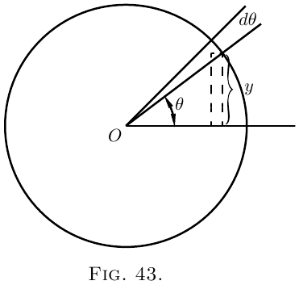
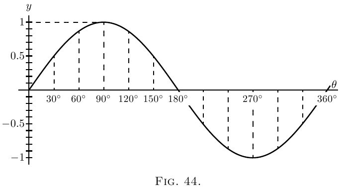
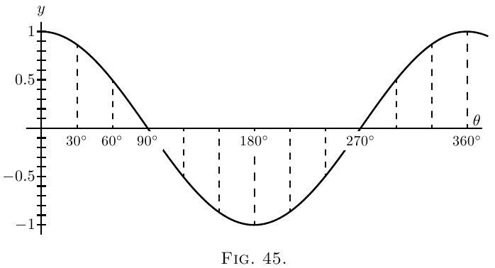

Greek letters being usual to denote angles, we will take as the usual letter for any variable angle the letter $\theta$ (“theta”).
Let us consider the function
\[
y= \sin \theta.
\]

What we have to investigate is the value of $\dfrac{d(\sin \theta)}{d \theta}$;
or, in other words, if the angle $\theta$ varies, we have to
find the relation between the increment of the sine
and the increment of the angle, both increments being
indefinitely small in themselves. Examine Figure 43,
wherein, if the radius of the circle is unity, the height
of $y$ is the sine, and $\theta$ is the angle. Now, if $\theta$ is
supposed to increase by the addition to it of the
small angle $d \theta$–an element of angle–the height
of $y$, the sine, will be increased by a small element $dy$.
The new height $y + dy$ will be the sine of the new
angle $\theta + d \theta$, or, stating it as an equation,
\[
y+dy = \sin(\theta + d \theta);
\]
and subtracting from this the first equation gives
\[
dy = \sin(\theta + d \theta)- \sin \theta.
\]
The quantity on the right-hand side is the difference
between two sines, and books on trigonometry tell
us how to work this out. For they tell us that if
$M$ and $N$ are two different angles,
\[
\sin M - \sin N = 2 \cos\frac{M+N}{2}·\sin\frac{M-N}{2}.
\]
If, then, we put $M= \theta + d \theta$ for one angle, and
$N= \theta$ for the other, we may write
\begin{align*}
dy &= 2 \cos\frac{\theta + d\theta + \theta}{2}
· \sin\frac{\theta + d\theta - \theta}{2},\\
\text{or,}\;
dy &= 2\cos(\theta + \tfrac{1}{2}d\theta)
· \sin\tfrac{1}{2} d\theta.
\end{align*}
But if we regard $d \theta$ as indefinitely small, then in
the limit we may neglect $\frac{1}{2} d \theta$ by comparison with $\theta$,
and may also take $\sin\frac{1}{2} d \theta$ as being the same as $\frac{1}{2} d \theta$.
The equation then becomes:
\begin{align*}
dy &= 2 \cos \theta × \tfrac{1}{2} d \theta; \\
dy &= \cos \theta · d \theta, \\
\text{ and, finally,}\;
\dfrac{dy}{d \theta} &= \cos \theta.
\end{align*}
The accompanying curves, Fig. 44 and Fig. 45 show,
plotted to scale, the values of $y=\sin \theta$, and $\dfrac{dy}{d\theta}=\cos\theta$,
for the corresponding values of $\theta$.


Let $y=\cos \theta$.
Now $\cos \theta=\sin\left(\dfrac{\pi}{2}-\theta\right)$.
Therefore
\begin{align*}
&\begin{aligned}
dy = d\left(\sin\left(\frac{\pi}{2} - \theta\right)\right)
&= \cos\left(\frac{\pi}{2} - \theta\right) × d(-\theta), \\
&= \cos\left(\frac{\pi}{2} - \theta\right) × (-d\theta),
\end{aligned} \\
&\frac{dy}{d\theta} = -\cos\left(\frac{\pi}{2} - \theta\right).
\end{align*}
And it follows that
\begin{align*}
&\frac{dy}{d\theta} = -\sin \theta.
\end{align*}
Lastly, take the tangent.
Let
\begin{align*}
y &= \tan \theta, \\
dy &= \tan(\theta + d\theta) - \tan\theta. \\
\end{align*}
Expanding, as shown in books on trigonometry,
\begin{align*}
\tan(\theta + d\theta)
&= \frac{\tan\theta + \tan d\theta}
{1 - \tan\theta·\tan d\theta}; \\
\text{whence}\;
dy &= \frac{\tan\theta + \tan d\theta}
{1-\tan\theta·\tan d\theta} - \tan\theta \\
&= \frac{(1 + \tan^2\theta)\tan d\theta}
{1-\tan\theta·\tan d\theta}.
\end{align*}
Now remember that if $d\theta$ is indefinitely diminished,
the value of $\tan d\theta$ becomes identical with $d\theta$, and
$\tan\theta · d\theta$ is negligibly small compared with $1$, so that
the expression reduces to
\begin{align*}
dy &= \frac{(1+\tan^2 \theta)\, d\theta}{1}, \\
\text{so that}\;
\frac{dy}{d\theta} &= 1 + \tan^2\theta, \\
\text{or}\;
\frac{dy}{d\theta} &= \sec^2 \theta.
\end{align*}
Collecting these results, we have:
| $y$ | $\dfrac{dy}{d\theta}$ |
|---|---|
| $\sin\theta$ | $\cos\theta$ |
| $\cos\theta$ | $-\sin\theta$ |
| $\tan\theta$ | $\sec^2\theta$ |
Sometimes, in mechanical and physical questions, as, for example, in simple harmonic motion and in wave-motions, we have to deal with angles that increase in proportion to the time. Thus, if $T$ be the time of one complete period, or movement round the circle, then, since the angle all round the circle is $2\pi$ radians, or $360°$, the amount of angle moved through in time $t$, will be \begin{align*} \theta &= 2\pi\frac{t}{T},\quad \text{in radians,} \\ \text{or}\; \theta &= 360\frac{t}{T},\quad \text{in degrees.} \end{align*}
If the frequency, or number of periods per second, be denoted by $n$, then $n = \dfrac{1}{T}$, and we may then write: \[ \theta=2\pi nt. \] Then we shall have \[ y = \sin 2\pi nt. \]
If, now, we wish to know how the sine varies with respect to time, we must differentiate with respect, not to $\theta$, but to $t$. For this we must resort to the artifice explained in Chapter IX., and put \[ \frac{dy}{dt} = \frac{dy}{d\theta} · \frac{d\theta}{dt}. \]
Now $\dfrac{d\theta}{dt}$ will obviously be $2\pi n$; so that \begin{align*} \frac{dy}{dt} &= \cos \theta × 2\pi n \\ &= 2\pi n · \cos 2\pi nt. \\ \end{align*} Similarly, it follows that \begin{align*} \frac{d(\cos 2\pi nt)}{dt} &= -2\pi n · \sin 2\pi nt. \end{align*}
We have seen that when $\sin \theta$ is differentiated with respect to $\theta$ it becomes $\cos \theta$; and that when $\cos \theta$ is differentiated with respect to $\theta$ it becomes $-\sin \theta$; or, in symbols, \[ \frac{d^2(\sin \theta)}{d\theta^2} = -\sin \theta. \]
So we have this curious result that we have found a function such that if we differentiate it twice over, we get the same thing from which we started, but with the sign changed from $+$ to $-$.
The same thing is true for the cosine; for differentiating $\cos\theta$ gives us $-\sin\theta$, and differentiating $-\sin\theta$ gives us $-\cos\theta$; or thus: \[ \frac{d^2(\cos\theta)}{d\theta^2} = -\cos\theta. \]
Sines and cosines are the only functions of which the second differential coefficient is equal (and of opposite sign to) the original function.
Examples With what we have so far learned we can now differentiate expressions of a more complex nature.
(1) $y=\arcsin x$.
If $y$ is the arc whose sine is $x$, then $x = \sin y$. \[ \frac{dx}{dy}=\cos y. \]
Passing now from the inverse function to the original one, we get \begin{align*} \frac{dy}{dx} &= \frac{1}{\;\dfrac{dx}{dy}\;} = \frac{1}{\cos y}. \\ \text{Now}\; \cos y &= \sqrt{1-\sin^2 y}=\sqrt{1-x^2}; \\ \text{hence}\; \frac{dy}{dx} &= \frac{1}{\sqrt{1-x^2}}, \end{align*} a rather unexpected result.
(2) $y=\cos^3 \theta$.
This is the same thing as $y=(\cos \theta)^3$.
Let $\cos\theta=v$; then $y=v^3$; $\dfrac{dy}{dv}=3v^2$. \begin{align*} \frac{dv}{d\theta} &= -\sin\theta.\\ \frac{dy}{d\theta} &= \frac{dy}{dv} × \frac{dv}{d\theta} = -3 \cos^2 \theta \sin\theta. \end{align*}
(3) $y=\sin(x+a)$.
Let $x+a=v$; then $y=\sin v$. \[ \frac{dy}{dv}=\cos v;\qquad \frac{dv}{dx}=1 \quad\text{and}\quad \frac{dy}{dx}=\cos(x+a). \]
(4) $y=\log_\epsilon \sin \theta$.
Let $\sin\theta=v$; $y=\log_\epsilon v$. \begin{align*} \frac{dy}{dv} &= \frac{1}{v};\quad \frac{dv}{d\theta}=\cos\theta;\\ \frac{dy}{d\theta} &= \frac{1}{\sin\theta} × \cos\theta = \cot\theta. \end{align*}
(5) $y=\cot\theta=\dfrac{\cos\theta}{\sin\theta}$. \begin{align*} \frac{dy}{d\theta} &= \frac{-\sin^2\theta - \cos^2 \theta}{\sin^2 \theta}\\ &= -(1+\cot^2 \theta) = -\text{cosec}^2 \theta. \end{align*}
(6) $y=\tan 3\theta$.
Let $3\theta=v$; $y=\tan v$; $\dfrac{dy}{dv}=\sec^2 v$. \[ \frac{dv}{d\theta}=3;\quad \frac{dy}{d\theta}=3 \sec^2 3\theta. \]
(7) $y = \sqrt{1+3\tan^2\theta}$; $y=(1+3 \tan^2 \theta)^{\frac{1}{2}}$.
Let $3\tan^2\theta=v$. \begin{align*} y &= (1+v)^{\frac{1}{2}};\quad \frac{dy}{dv} = \frac{1}{2\sqrt{1+v}} \end{align*} (see here); \begin{align*} \frac{dv}{d\theta} &= 6\tan\theta \sec^2 \theta \\ \end{align*} for, if $\tan \theta = u$, \begin{align*} v &= 3u^2;\quad \frac{dv}{du} = 6u;\quad \frac{du}{d\theta} = \sec^2 \theta; \\ hence \frac{dv}{d\theta} &= 6 (\tan \theta \sec^2 \theta) \\ hence \frac{dy}{d\theta} &= \frac{6\tan\theta \sec^2\theta}{2\sqrt{1 + 3\tan^2\theta}}. \end{align*}
(8) $y=\sin x \cos x$. \begin{align*} \frac{dy}{dx} &= \sin x(-\sin x) + \cos x × \cos x \\ &= \cos^2 x - \sin^2 x. \end{align*}
(2) Find the value of $\theta$ for which $\sin\theta × \cos\theta$ is a maximum.
(3) Differentiate $y=\dfrac{1}{2\pi} \cos 2\pi nt$.
(4) If $y = \sin a^x$, find $\dfrac{dy}{dx}$.
(5) Differentiate $y=\log_\epsilon \cos x$.
(6) Differentiate $y=18.2 \sin(x+26°)$.
(7) Plot the curve $y=100 \sin(\theta-15°)$; and show that the slope of the curve at $\theta = 75°$ is half the maximum slope.
(8) If $y=\sin \theta·\sin 2\theta$, find $\dfrac{dy}{d\theta}$.
(9) If $y=a·\tan^m(\theta^n)$, find the differential coefficient of $y$ with respect to $\theta$.
(10) Differentiate $y=\epsilon^x \sin^2 x$.
(11) Differentiate the three equations of Exercises XIII. (here), No. 4, and compare their differential coefficients, as to whether they are equal, or nearly equal, for very small values of $x$, or for very large values of $x$, or for values of $x$ in the neighbourhood of $x=30$.
(12) Differentiate the following: \begin{align*} \text{(i)}\quad y &= \sec x. \\ \text{(ii)}\quad y &= \arccos x. \\ \text{(iii)}\quad y &= \arctan x. \\ \text{(iv)}\quad y &= \text{arcsec} x. \\ \text{(v)}\quad y &= \tan x × \sqrt{3 \sec x}. && \end{align*}
(13) Differentiate $y=\sin(2\theta +3)^{2.3}$.
(14) Differentiate $y=\theta^3+3 \sin(\theta+3)-3^{\sin \theta} - 3^\theta$.
(15) Find the maximum or minimum of $y=\theta \cos \theta$.
(1) (i) $\dfrac{dy}{d\theta} = A \cos \left( \theta - \dfrac{\pi}{2} \right)$;
(ii) $\dfrac{dy}{d\theta} = 2\sin\theta \cos\theta = \sin2\theta$ and $\dfrac{dy}{d\theta} = 2\cos2\theta$;
(iii) $\dfrac{dy}{d\theta} = 3\sin^2 \theta \cos\theta$ and $\dfrac{dy}{d\theta} = 3\cos3\theta$.
(2) $\theta = 45°$ or $\dfrac{\pi}{4}$ radians.
(3) $\dfrac{dy}{dt} = -n \sin 2\pi nt$.
(4) $a^x \log_\epsilon a \cos a^x$.
(5) $\dfrac{\cos x}{\sin x} = \text{cotan}\; x$
(6) $18.2 \cos \left(x + 26° \right)$.
(7) The slope is $\dfrac{dy}{d\theta} = 100\cos\left(\theta - 15° \right)$, which is a maximum when $(\theta -15°) = 0$, or $\theta = 15°$; the value of the slope being then ${}= 100$. When $\theta = 75°$ the slope is $100\cos(75° - 15°) = 100\cos 60° = 100 × \frac{1}{2} = 50$.
(8) $\begin{aligned}[t] \cos\theta \sin2\theta + 2\cos2\theta \sin\theta &= 2\sin\theta\left(\cos^2 \theta + \cos2\theta\right) \\ &= 2\sin\theta\left(3\cos^2 \theta - 1\right). \end{aligned}$
(9) $amn\theta^{n-1} \tan^{m-1}\left(\theta^n\right)\sec^2 \theta^n$.
(10) $\epsilon^x \left(\sin^2 x + \sin2x\right)$; $\epsilon^x \left(\sin^2 x + 2\sin2x + 2\cos2x\right)$.
(11) $\left(i\right) \dfrac{dy}{dx} = \dfrac{ab}{\left(x + b\right)^2}$; (ii) $\dfrac{a}{b} \epsilon^{-\frac{x}{b}}$; (iii) $\dfrac{1}{90}° × \dfrac{ab}{\left(b^2 + x^2\right)}$.
(12) (i) $\dfrac{dy}{dx} = \sec x \tan x$; (ii) $\dfrac{dy}{dx} = - \dfrac{1}{\sqrt{ 1 - x^2}}$; (iii) $\dfrac{dy}{dx} = \dfrac{1}{ 1 + x^2}$; (iv) $\dfrac{dy}{dx} = \dfrac{1}{x \sqrt{ x^2 - 1}}$; (v) $\dfrac{dy}{dx} = \dfrac{\sqrt{ 3\sec x} \left(3\sec^2 x - 1\right)}{2}$.
(13) $\dfrac{dy}{d\theta} = 4.6\left(2\theta + 3\right)^{1.3} \cos\left(2\theta + 3\right)^{2.3}$.
(14) $\dfrac{dy}{d\theta} = 3\theta^2 + 3\cos \left( \theta + 3 \right) - \log_\epsilon 3 \left( \cos\theta × 3^{\sin\theta} + 3\theta \right)$.
(15) $\theta = \cot\theta; \theta = ±0.86$; is max. for $+\theta$, min. for $-\theta$.